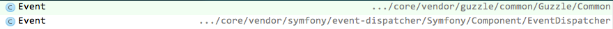

Building Modules for Drupal 8
Modules
Drupal 8 Basics
- YAML
- Autoloading
- Controllers
- Routing
- Service containers
- Dependency injection
- Twig Templates
- Plugins
YAML
Yet Another Markup Language*
* YAML Ain't Markup Language
"YAML is a human friendly data serialization standard for all programming languages."
-yaml.org
Why YAML?
- YAML is both human editable and machine readable.
- .yml files are not Drupal specific like .info files.
- XML would require a Drupal specific schema.
- JSON doesn't allow comments.
- Non-ASCII characters require escaping in JSON.
"...and XML has cooties ;)" -chx
http://www.drupal4hu.com/node/377
Drupal 7
Info File: demo.infoname = Demo Module
description = "A demo module used to explain the basics."
core = 7.x
package = "D7 Demo"
dependencies[] = nodeDrupal 8
Info File: demo.info.ymlname: Demo Module
type: module
description: "A demo module used to explain the basics."
core: 8.x
package: D8 Demo
dependencies:
- nodeFIG & PSR-0
The Framework Interoperatabilty Group is a collection of individuals that discuss the commonalities between their PHP-based projects and find ways we can all work together.
This group established the PSR-0 standard which is a guideline to be followed for autoloader interoperability.
PSR-0 Standard
- A fully-qualified namespace and class must have the following structure
\<Vendor Name>\(<Namespace>\)*<Class Name> - Each namespace must have a top-level namespace ("Vendor Name").
- Each namespace can have as many sub-namespaces as it wishes.
- Each namespace separator is converted to a
DIRECTORY_SEPARATORwhen loading from the file system. - Each
_character in the CLASS NAME is converted to aDIRECTORY_SEPARATOR. The_character has no special meaning in the namespace. - The fully-qualified namespace and class is suffixed with .php when loading from the file system.
- Alphabetic characters in vendor names, namespaces, and class names may be of any combination of lower case and upper case.
PSR-0 Examples
\Guzzle\Common\Event => /Guzzle/Common/Event.php\Symfony\Component\Yaml\Parser => /Symfony/Component/Yaml/Parser.php\Drupal\Core\Config\FileStorage => /Drupal/Core/Config/FileStorage.php\namespace\package\Class_Name => /namespace/package/Class/Name.phpAvoiding Namespace Collisions
<?php
namespace Guzzle\Common;
use Symfony\Component\EventDispatcher\Event as SymfonyEvent;
/**
* Default event for Guzzle notifications
*/
class Event extends SymfonyEvent implements ToArrayInterface, \ArrayAccess, \IteratorAggregate
{
...Drupal 8 Module
\Drupal\demo\Controller\MyController =>
/modules/demo/lib/Drupal/demo/Controller/MyController.php
<?php
namespace Drupal\demo\Controller;
class MyController {
private function text() {
return t('Hello, world');
}
public function page() {
return array(
'#type' => 'markup',
'#markup' => $this->text(),
);
}
}Class Inheritance
/modules/demo/lib/Drupal/demo/Controller/FinalController.php
<?php
namespace Drupal\demo\Controller;
use Drupal\demo\Controller\MyController;
class FinalController extends MyController {
final public function page() {
return array(
'#type' => 'markup',
'#markup' => t('Goodbye, cruel world!'),
);
}
}What is a Controller?
A controller is a PHP function you create that takes information from the HTTP request and constructs and returns an HTTP response (as a Symfony2 Response object). The response could be an HTML page, an XML document, a serialized JSON array, an image, a redirect, a 404 error or anything else you can dream up. The controller contains whatever arbitrary logic your application needs to render the content of a page.
http://symfony.com/doc/current/book/controller.html
Our Demo Controller
/Drupal/demo/Controller/MyController::page
Drupal 8 Routing
A route is a path which is defined for Drupal to return some sort of content on. For example, the default front page, '/node' is a route. When Drupal receives a request, it tries to match the requested path to a route it knows about. If the route is found, then the route's definition is used to return content. Otherwise, Drupal returns a 404.

Drupal's routing system works with the Symfony HTTP Kernel [and] is responsible for matching paths to controllers, and you define those relations in routes. You can pass on additional information to your controllers in the route and access checking is integrated.
http://drupal.org/developing/api/8/routing
Drupal 7 Routing Example
/sites/all/modules/demo/demo.module
<?php
function demo_menu() {
$items['hello'] = array(
'title' => 'Demo',
'page callback' => 'demo_page',
'access arguments' => array('access content'),
);
return $items;
}
function demo_page() {
return t('Hello, world!');
}Drupal 8 Routing Example
/modules/demo/demo.routing.yml
demo_page:
path: '/hello'
defaults:
_title: 'Demo'
_content: 'Drupal\demo\Controller\MyController::page'
requirements:
_permission: 'access content'
demo_final_page:
path: '/goodbye'
defaults:
_title: 'Demo'
_content: 'Drupal\demo\Controller\FinalController::page'
requirements:
_permission: 'access content'Why use a Routing component?
- hook_menu() did too much. From handling incoming requests to providing menu links. Everything was tied to it.
- Because the hook function did so many things, all of these features were tightly coupled together.
- Using the Symfony2 Routing component, we are able to split out the route handling aspect into its own system.
- We can now create routes on more than just the path, for example make a request for JSON, XML or HTML while still using the same path.
Using Access Checks with Routes
Procedural access callbacks from Drupal 7 have been replaced by AccessCheck services in Drupal 8.
Drupal 7 Access Callback
/sites/all/modules/demo/demo.module
<?php
function demo_menu() {
$items['hello'] = array(
'title' => 'Demo',
'page callback' => 'demo_page',
'access callback' => 'demo_anonymous_access_only',
);
return $items;
}
function demo_anonymous_access_only() {
global $user;
if (in_array('anonymous user', $user->roles)) {
return TRUE;
}
else {
return FALSE;
}
}Drupal 8 AccessCheck Discovery
/modules/demo/demo.routing.yml
demo_final_page:
path: '/goodbye'
defaults:
_title: 'Demo'
_content: 'Drupal\demo\Controller\FinalController::page'
requirements:
_permission: 'access content'
_access_user_is_anonymous: 'TRUE'
/modules/demo/demo.services.yml
services:
access_check.demo.user_is_anonymous:
class: Drupal\demo\Access\UserIsAnonymousAccessCheck
tags:
- { name: access_check }Drupal 8 AccessCheckInterface
/modules/demo/lib/Drupal/demo/Access/UserIsAnonymousAccessCheck.php
<?php
namespace Drupal\demo\Access;
use Drupal\Core\Access\AccessCheckInterface;
use Drupal\Core\Session\AccountInterface;
use Symfony\Component\Routing\Route;
use Symfony\Component\HttpFoundation\Request;
class UserIsAnonymousAccessCheck implements AccessCheckInterface {
public function applies(Route $route) {
return $route->hasRequirement('_access_user_is_anonymous');
}
public function access(Route $route, Request $request, AccountInterface $account) {
return (!$account->isAnonymous() ? static::DENY : static::ALLOW);
}
}
Dynamic Routes in Drupal 8
What does one do if they need to create a route dynamically?
How does one create routes based on things that don't yet exist?
In Drupal 7, we created dynamic routes with a loop in hook_menu().
In Drupal 8, dynamic routes are created in a callback method.
Drupal 7 Dynamic Route Example
/sites/all/modules/octocat/octocat.module
<?php
function octocat_menu() {
$items = array();
foreach (octocat_get_types() as $type) {
$items['octocat/add/' . $type->machine_name] = array(
'title' => $type->title,
'page callback' => 'octocat_type_add_page',
'access arguments' => 'create ' . $type->type,
);
}
return $items;
}Drupal 8 Dynamic Routing
Declaring 'route_callbacks' in module.routing.yml
/modules/octocat/octocat.routing.yml
route_callbacks:
- '\Drupal\octocat\Routing\OctoCatRoutes::routes'Drupal 8 Dynamic Routing Example Routing Method
/modules/octocat/lib/Drupal/cat/Routing/OctoCatRoutes.php
<?php
namespace Drupal\octocat\Routing;
class OctoCatRoutes {
public function routes() {
$routes = array();
foreach (octocat_get_types() as $type) {
$routes['octocat.add.' . $type->machine_name] = new Route(
'octocat/add/' . $type,
array(
'_title' => $type->title,
'_controller' => '\Drupal\octocat\Controller\OctoCatController::add',
'type' => $type->machine_name,
),
array('_permission' => 'create ' . $type)
);
}
return $routes;
}
}